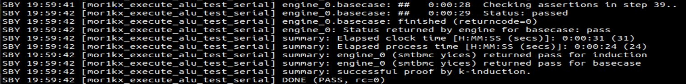

Formal Verification of Mor1kx Processor
July 27, 2021
I have been working on the Mor1kx Formal project for a month, and I am glad that I have verified most of the cappuccino pipeline before the First evaluation of GSoC'21. The best part of this learning phase is that it never ends. Whenever I invest some time in cappuccino design files, I come up with new Formal Verification techniques and validation methodologies that can verify the properties of our interests.
In one of my previous posts, I briefly explained the approach to Mor1kx Formal. I had to have a broad view of Mor1kx Core and its behaviour before getting into Mor1kx Formal. Thanks to Fusesoc, it gave me a way to understand the exemplary conduct of the mor1kx processor easily by looking at its waveforms. Whenever I need some clarifications on input assumptions, I have a look at its waveform. Assumptions are a crucial part of the test; wrong assumptions make the test meaningless. I also get ideas on what else to assert in the design. Moreover, fusesoc generated waveforms are much better than waveforms generated via cover statements.
Why Bottom to Top Approach?
Formal Verification is much easier when we follow the Bottom to Top approach. Initially, we verify individual module properties and later integrate verified modules for further testing. Let's see how this approach makes things easier for the Fetch stage of the pipeline. First of all, it would be hard to begin with the fetch module without verifying its submodules. Why do we need to know about submodules? Fetch functionality is dependent on the output ports of cache and MMU. If any of these output interfaces are erroneously driven, then Fetch performance will be affected. Hence I started with DPRAM. Having verified modules of Simple DPRAM and LRU algorithm simplifies the formal check of Instruction Cache. IMMU testing without submodule verification may not guarantee the correctness of True DPRAM. Through this hierarchical validation, we can confirm the expected behavior of the submodule from the top module point of view.

This approach is good enough to verify the submodule interfaces of the CPU. But, I don't particularly like waiting hours for the solver to complete the proof. Top module testing involves an entire CPU core check where the solvers strive to turn submodule assertions false by exploring different design paths, slowing down the test. Hence, CPU level tests are limited to reset and input assumptions validation which fastens the Formal check.
What properties do I choose to assert?
I always had this query about what properties validation makes verification meaningful. The answer to this lies within the module, which we are intended to verify. It's good to prove the functionality formally, but we can do the same via the test bench. Then, why Formal? In the test bench verification, we examine the functionality of our design with few input combinations but can't assure a similar behaviour for every input combination. Formal tools help in identifing where the design goes out of our expectations, and here check is not restricted for a few input combinations, but the assertion should hold for any random input. Other than that, we can check interface properties and internal states. Many submodule interfaces within the CPU keep on communicating with each other, and it's very much necessary to confirm that output interfaces of modules are correctly driven. So, we should focus more on asserting output interface properties.
How to choose Formal Depth?
This project relies on the Yosys-smtbmc engine and yices solver. A default depth of 20 is chosen for verification. Although in some cases, it's not enough to verify checks for just 20 clock cycles. Hence, it's good to have a depth greater than N while verifying the functionality of operations that take at least N clock cycles to complete; else, the solver may result in Induction failure.
Let's look at the serial multiplier, which takes about 32 clocks to compute the result. An attempt is made to prove that the number of clock cycles won't go beyond 33.
// Valid multiplication output is seen after 32 clocks
always @(posedge clk) begin
if (f_past_valid & !pipeline_flush_i & !$past(pipeline_flush_i)) begin
if (f_op | f_op_valid_i)
`ASSUME (!decode_valid_i);
else if ($rose(f_op_i))
// When the operation starts decode_valid stays high
`ASSUME (decode_valid_i);
// Start counting when we see the operation start
if ($rose(f_op_i) & alu_valid_o) begin
f_op <= 1;
f_op_count <= 1;
end
// Stop when op is done or abort if op_i goes low during execution.
else if (f_op_valid_i | !f_op_i) begin
f_op <= 0;
end
// Count number of clock cycles taken to complete op
if (f_op) begin
f_op_count <= f_op_count + 1;
`ASSUME (f_op_i);
`ASSUME ($stable(f_stable_i));
end
// Ensure the operation completes never going beyond max count
assert (f_op_count <= OP_MAX_CLOCKS + 1);
end else if (pipeline_flush_i & f_past_valid) begin
f_op <=0;
f_op_count <= 0;
end
Test outcome will be PASS if both BMC and Induction clear the Formal evaluation. If there happens to be BMC failure irrespective of the Induction, the test will FAIL. BMC passing and Induction failing will result in an UNKNOWN proof.
Highlighted assert statement requires a depth of clocks greater than 32. If we set depth as 20 BMC passes, but Induction fails. Thus, the result will be UNKNOWN as depicted in the following figure.
If we increase the number of test clock cycles to 40 or more, it avoids Induction fail and the test passes.
Cappuccino Pipeline Verification
A five-stage pipeline has many modules, and I haven't added assertions to modules that have only assign statements. Assign statements can change very frequently, and it may not bring forward any erroneous state. So, it's not worth maintaining assign statements as the solver always results in PASS for such tests.
In the last post, I had discussed my initial work on DPRAM and their Formal Verification. Having looked at modules like Cache gave me more insights on what other properties I can assert in DPRAM, I had to rework those modules again. I kept following this method, revisited verified properties, and received much exposure to Formal verification techniques day by day.
Fetch Stage
Instruction fetch is the primary stage of the pipeline: submodules modules used are Cache and MMU .
How I verified Cache?
Mor1kx Instruction Cache FSM handles refill, read and invalidate functions. To formally verify set-associative Cache, I have adopted the following method:
- First refill data
f_refill_dataat the addressf_refill_addrin the cache. Use thef_refilledregister to keep track of cache refill. - After refill, the CPU request for address
f_refill_addrshould result in a cache hit. - Data put on the output port on Cache hit should be the same as refilled data
f_refilled_data. - Let's invalidate the address
f_refill_addrand keep track of this invalidation using thef_invalidateregister. - Now, I can assert not to have a cache hit for
f_refill_addrafter invalidation.
`ifdef ICACHE
(* anyconst *) wire [OPTION_OPERAND_WIDTH-1:0] f_refill_addr;
(* anyconst *) reg [OPTION_OPERAND_WIDTH-1:0] f_refill_data;
wire f_this_refill;
reg f_refilled;
initial f_refilled = 1'b0;
assign f_this_refill = (wradr_i == f_refill_addr) && refill_o;
//Refilling
always @(posedge clk) begin
if ($past(f_this_refill) && (f_refill_data == wrdat_i) &&
!$past(cache_hit_o)&& $past(cpu_req_i)
&& f_past_valid && !$past(rst) && $past(state) == READ) begin
assert (refill);
f_refilled <= 1'b1;
assert ($onehot(way_we));
end
end
//Read: f_refill_data has to be returned if cpu requests for same address f_refill_addr.
always @(posedge clk) begin
if ($rose(f_refilled) && (cpu_adr_match_i == f_refill_addr)
&& cache_hit_o && f_past_valid && !$past(rst)) begin
assert (cpu_dat_o == f_refill_data);
assert (read);
assert (cpu_ack_o);
end
end
reg f_after_invalidate;
initial f_after_invalidate = 1'b0;
//Invalidation: Checking if ways of set have invalid tag bit on set invalidation.
always @(posedge clk) begin
if ($past(invalidate_o) && !$past(refill) && f_past_valid
&& $past(spr_bus_dat_i) == f_refill_addr[WAY_WIDTH-1:OPTION_ICACHE_BLOCK_WIDTH]
&& $past(f_refilled) && !$past(f_refilled,2)) begin
assert (spr_bus_ack_o);
assert (invalidate);
assert (!cpu_ack_o);
assert (tag_we);
assert (!tag_din[TAGMEM_WAY_VALID]);
f_after_invalidate <= 1;
end
end
//There shouldn't be any cache hit for f_refill_addr after invalidation.
always @(posedge clk)
if (cpu_adr_match_i == f_refill_addr && $rose(f_after_invalidate) && f_past_valid)
assert (!cache_hit_o);
`endif
You can check out the complete Formal Verification of Mor1kx Instruction Cache here.
Formally Verifying MMU
MMU's principal task is to map the given Virtual Address to a Physical Address. A virtual address has two parts: Virtual Page Number (VPN) and Page Offset. While Mapping MMU changes VPN to PPN (Physical Page Number), but the page offset remains unchanged. Things slow down if we look match to VPN in all memory locations. To avoid it, add a constraint that we have some way hit.
Other properties to assert in MMU:
- On Translation Look Aside Buffer (TLB) miss, MMU shouldn't stop Cache from fetching Instruction.
- No more than one way hit for a match to a particular VPN.
(* anyconst *) wire [OPTION_OPERAND_WIDTH-1:0] f_vaddr;
//Physical Address of f_vaddr virtual address is asserted to verify expected PPN.
//Page bits = 13 bits
always @(posedge clk) begin
if ((virt_addr_match_i == f_vaddr) && way_hit[0]
&& !way_huge[0] && !pagefault_o && f_past_valid)
assert ((phys_addr_o[12:0] == f_vaddr[12:0]) &&
phys_addr_o[31:13] == itlb_trans_dout[0][31:13]);
end
//On TLB miss, cache should not be inhibited.
always @(*)
if (tlb_miss_o)
assert (!cache_inhibit_o);
//Way hits are one hot encoded.
always @(*)
assert ($onehot0(way_hit));
Coming to Fetch, added reset validation and assert properties that are always true.
- The pipeline stall keeps the
fetch_valid_osignal stable. - Clear
fetch_valid_osignal on branch misprediction. - Pipeline flush should pull down the
fetch_valid_osignal. - Branch misprediction leads to stall insertion in the pipeline.
- Pipeline stall shouldn't advance pipeline to next stage.
I have listed out the properties which I've verified, you can look into it here.
Decode Stage
To formally verify the decode, assert one-hot of decoded instructions.
assign f_set_of_opcodes = {decode_op_lsu_load_o, decode_op_lsu_store_o,
decode_op_mfspr_o, decode_op_mtspr_o,
decode_op_rfe_o, decode_op_setflag_o,
decode_op_add_o, decode_op_mul_signed_o,
decode_op_mul_unsigned_o,
decode_op_div_signed_o,
decode_op_ext_o, decode_op_div_unsigned_o,
decode_op_shift_o, decode_op_ffl1_o,
decode_op_movhi_o, decode_op_msync_o,
decode_op_branch_o};
//one instruction => one opcode
always @(*)
assert ($onehot0(f_set_of_opcodes));
Execute Stage
Mor1kx ALU supports different architecture implementations. Here, I assert $onehot of opcodes—one instruction execution at a time.
assign f_exec_opcodes = {op_add_i, op_mul_i, op_div_i,
op_movhi_i, op_shift_i,
op_ffl1_i, op_mtspr_i,
op_mfspr_i, op_ext_i,
op_jbr_i, op_jr_i};
always @(posedge clk)
if (f_past_valid && !$past(rst))
`ASSUME ($onehot0(f_exec_opcodes));
Along with that, we verified selectable parameters of ALU. My mentor Stafford Horne has created Multi clock interface to check the Serial ALU operations. We can reuse this interface to verify the serial multiplier, divider, and shifter.
Control/Memory Stage
There are plenty of modules to be verified in this stage. Load Store Unit (LSU) and Control modules are major ones.
Properties verified in ICACHE and DCACHE are not too different as both have the same functionality. I spent a good time asserting the ICACHE properties and could reuse them in DCACHE also. I have used this time-saving property reuse strategy even in IMMU/DMMU.
Store buffer is another module initialized in LSU. Properties verified in this are as follows:
- Flag
full_o(empty_o) stays high when the FIFO buffer is full (empty). - Write pointer (Read pointer) remains stable if there is no
write_i(read_i) signal. - Both
empty_oandfull_ocannot be high at the same time. - Assume no
write_i(read_i) signal when the buffer is Full (Empty) and assert the same in the top module test.
Check out how I formally verified store buffer here. Complete Verification of LSU covers all its submodule validations.
Control generates SPR signals to all other interfaces. So, many SPR based properties are asserted here, along with the properties of debug interface.
It's essential to verify all helper modules like Cache, store buffer, and many more before moving to parts like Fetch, Control, and Load Store Unit. Cappuccino core is highly configurable, so all selectable parameters have to be verified for completeness. Proof of individual module properties completes within few minutes for a given depth of 20. But the CPU level test slows down if the depth given is more than ten clocks.
CI of Formal checks
I have added Formal tests to mor1kx CI by creating a job that installs Yosys-Formal tools and their dependencies. To verify the formal test, run the following command.
make -C bench/formalThis command verifies all the SBY files in the formal directory. To verify single module run
make -C bench/formal <file_name>Challenges
Initially, it was difficult for me to understand the source code. Having spent some time with RTL code, everything seemed to be clear. I didn’t have much experience with Formal tools but handling BMC and Induction fail gave me more confidence. Interesting part is how we get grips with Induction failure. BMC failure can be easily resolved with a good initial state but induction can start with any bad state. We often reset the design before starting but induction can take up the state of the design when it's not reset.
Merged Pull Requests
What's next?
Now, SPR properties are verified inside every module, more like repeating the same checks. I aspire to generalize all SPR properties in the module and reuse them with an SPR interface. I'm also expecting to develop one for the Wishbone interface.